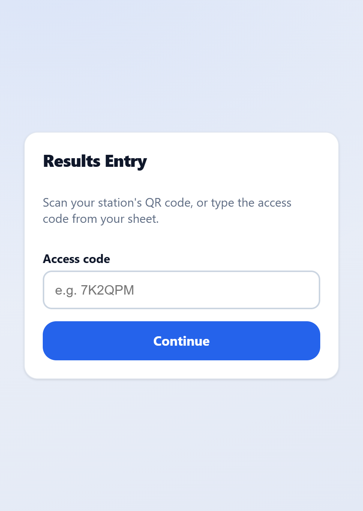
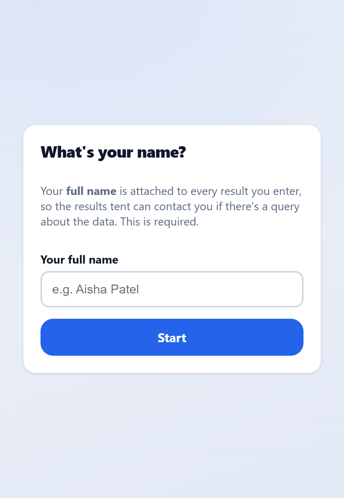
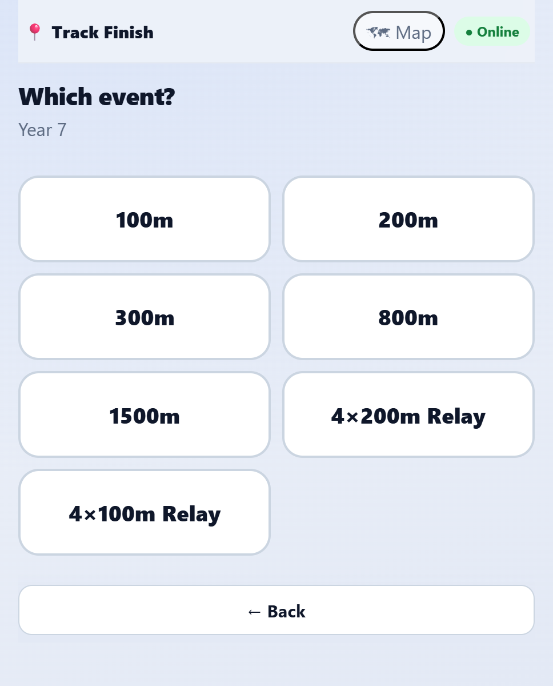
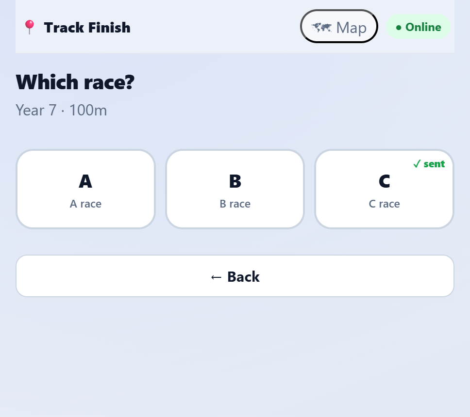
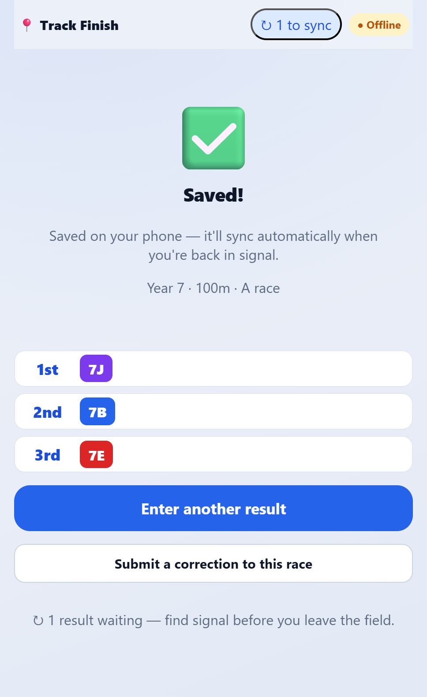
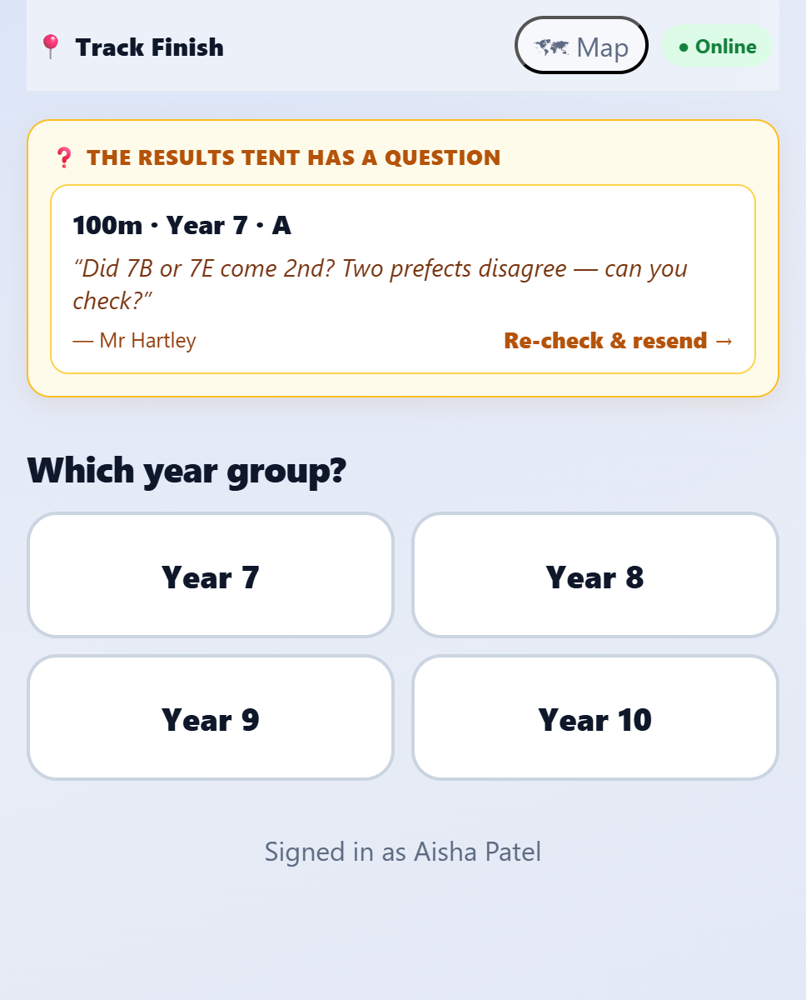
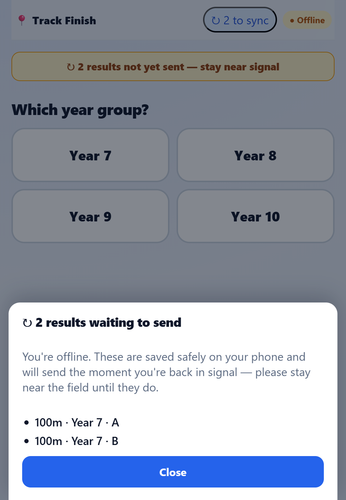

Scoring on your phone
If you can tap a screen, you can do this. No passwords, no athlete names to type, no maths. When a race finishes, you tap the forms in the order they crossed the line, then tap Submit. The results tent takes care of the rest.
⭐ Six golden rules
- 📶No signal? No problem. Every result saves on your phone instantly and sends itself when signal returns. Never refresh or delete to “fix” it.
- ✅Always finish on the green “Saved!” screen. If you don’t see it, it hasn’t gone in.
- ☝️One race at a time. Record it, submit it, then start the next.
- 🛟You can’t break anything. The tent checks and confirms every result before it counts.
- ✏️Made a mistake? Tap “Submit a correction” and redo it — the newest version wins.
- ❓If the tent has a question, a yellow card appears on your home screen. Tap it, check, resend.
Phone died or out of charge? Run out of data? No signal and the app won’t load? App just playing up? Don’t panic and don’t lose the result. Write the finishing order on the paper sheet at your station and bring that paper to the results tent — paper is a perfectly good backup, and we’ll type it in for you.
Just patchy signal while the app is open is fine — your results save on your phone and send themselves later. Paper is only for when the app itself can’t be used.
Get into the app (once, at the start of the day)

Get your station code & open the app
Come to the results tent to get your station’s access code (it looks like 7K2QPM) — or scan the QR code there with your phone’s camera. Type the code into the app (or tap the link the QR opens) and tap Continue.
- It works in your normal phone browser — there’s nothing to download.
- The code tells the app which station (and which races) you’re covering.

Type your name — just once
Back at your station, enter your full name and tap Start. This is only so the results tent knows who to ask if they ever have a question about a result. You do this once and the app remembers you all day.
- No account, no password — that’s the whole sign-in.
The bit you’ll do all day

Tap the race you’re recording
Your home screen suggests the next races at your station under “Your station — tap the race you’re recording.” Tap the right one to jump straight in. If it’s not listed, just pick the year group below (Year 7–10) and you’ll choose the event next.
- The green pill ● Online means results are sending normally.
- 🗺 Map shows the venue if you need to find your way around.

Pick the event
Tap the event you’re recording — for example 100m. You’ll only see the events that belong to your station, so the list stays short.
- Tapped too soon? ← Back is always at the bottom.

Pick the race: A, B or C
Each event runs in strings — the fast A race, then B, then C. Tap the one that just ran.
- A ✓ sent tag means that race has already been recorded — no need to do it again.

Tap the finishing order ⭐
This is the main job. As each form crosses the line, tap its coloured button — first the winner, then 2nd, then 3rd, and so on. The order builds up in the list underneath, with 1st, 2nd, 3rd… next to each one.
- The button colours match the forms — tap, and it locks in with its place.
- Wrong tap? ↩ Undo removes the last one, or tap the ✕ beside any place.
- When you’ve got them all, tap Review →.

Check & submit
Have a quick look at the order. If some forms didn’t run, the app asks you to tap each one to confirm — this stops a form being forgotten by accident. Then tap the big Submit result button.
- Winning time/distance is optional — only add it if you have it handy (it helps the tent spot records).
- Need to fix the order first? ← Edit takes you back.

See the green “Saved!”
A big green tick and “Saved & sent to the results tent” means you’re done. Tap Enter another result and you’re ready for the next race.
- Always wait for this screen — it’s your proof the result went in.
- Spotted a mistake after submitting? Tap Submit a correction to this race.
Three things that might happen

📶 You’re offline
You’ll see ● Offline and a “to sync” counter. Don’t worry — your results are saved on the phone and will send themselves. Just stay near the field until the counter hits zero.

❓ The tent has a question
A yellow card appears on your home screen with the race and the question. Tap it, double-check on the field, fix if needed and tap Re-check & resend.

↻ Waiting to send
Tap the “to sync” counter any time to see what’s still waiting. Before you leave the field, make sure it says everything’s synced.
Quick fixes
Tap ↩ Undo to remove the last one, or the ✕ next to any place in the list. Nothing is sent until you press Submit.
On the “Saved!” screen tap Submit a correction to this race and enter it again. The newest version replaces the old one.
That’s fine and normal on a big field. Keep going — results save on your phone and send when you’re back in signal.
Just leave it unplaced. On the Check & submit screen, tap it as “didn’t run” and carry on.
Pop back to the results tent for your station’s code, or re-scan the QR code. Your name is remembered.
Switch to paper — record the result on your station’s paper sheet and bring it to the results tent. That’s exactly what it’s there for; don’t lose the result trying to fix the app.